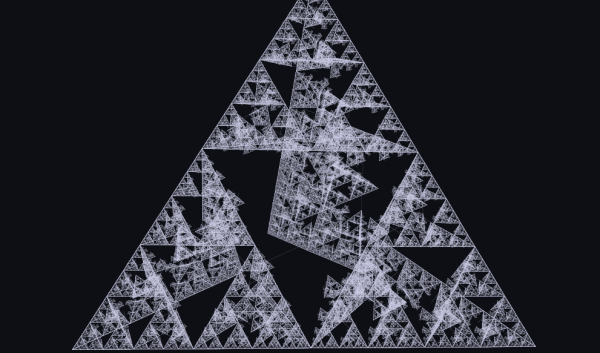

Mouse and Keyboard Controls
Version 3 supports better mouse controls:
- Mouse drag: Shifts the camera's position.
- Shift + mouse drag: Rotates the camera about the center of the structure.
- Mouse wheel: Zooms the camera forwards or backwards.
- Control + anything: Reduces the speed of any other action.
Turtle Command API

Turtle commands let you do more with less code. By constructing a series of commands to be run, you have the flexibility of transparently driving
multiple turtles simultaneously, using the built-in recursion and iteration constructs, and even driving turtles of different types.
In version 2.1, all commands were given directly to the turtle, like this:
for(int i = 0; i < 4; ++i)
t.move(100).turn(90);
Starting with version 3, however, you can construct the equivalent turtle command instead:
repeat(4, move(100), turn(90));
While there are some cases that still require Java's control flow constructs, many common coding patterns have a pure turtle command representation.
(Check out the example files included with Cheloniidae for more details.)


{kind=link}
{kind=link}
{kind=link}
{kind=link}
{kind=link}
{kind=link}